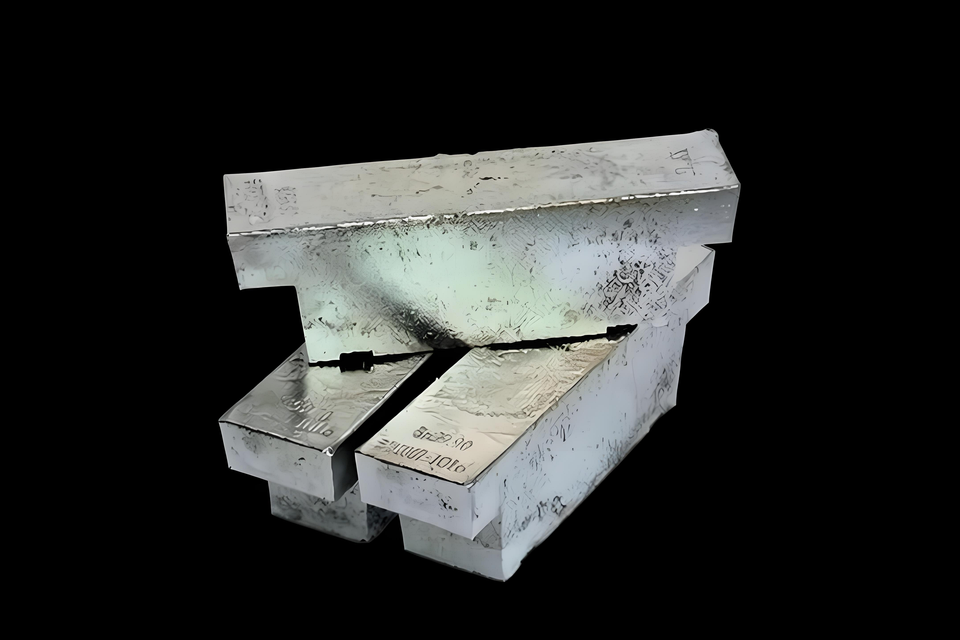

High-Purity Metals / High-Purity Metal
Stannum Metal
金属锡
Specifications
| Product Name | Stannum Metal |
|---|---|
| Chinese Name | 金属锡 |
| Product Line | High-Purity Metals |
| Category | High-Purity Metal |
| Formula / Composition | Sn |
| Purity | 99.9%~99.99% |
| Standard Size | 25kg ingot |
| Packaging | 铁桶或木箱 |
| Customization | Available on request |
Product Features
閾搁敪鍧楃姸
한계점
Applications
被称作算力金属、电子工业、镀锡钢板、电池锡基负极、低温超导
Known as a computing-power metal, tin is used in the electronics industry, tin-plated steel sheets, tin-based battery anodes, and low-temperature superconductivity.
컴퓨팅 파워 금속으로 알려진 주석은 전자 산업, 주석 도금 강판, 주석 기반 배터리 음극 및 저온 초전도에 사용됩니다.
RFQ Checklist